AgroMo Commander
Hollós Roland
2018. 09. 27
1 Bevezetés
1.1 AgroMo használatának szintjei
- AgroMo Lite
- AgroMo Spatial
- AgroMo Commander <- RBBGCMuso
- AgroMo Expert
1.2 Az RBBGCMuso:
- interfész,
- grafikus megjelenítő,
- modelloptimalizálást, érzékenységelemzést lehetővé tevő,
- az általános modellhasználatot könnyebbé tevő
- R csomag.
2 A workshop célja
- modell futtatása,
- eredmények ábrázolása,
- egyszerű kísérletek elvégzése,
- a kísérletek eredményeinek grafikus értelmezése,
- AgroMo Commander (RBBGCMuso) segítségével.
3 A modell input-output kezelése
| input (file kiterjesztés) | output |
|---|---|
| meteorológia (mtc43) | széntározók állapotai |
| ökofiziológiai (epc) | termés |
| Termőhely adatok (ini) | levélfelületi index |
| menedzsment (ini) | Talajnedvesség |
| vezérlés (ini) | (…)x~3060 |
3.1 Az ini file feladatai
- Vezérlés
- Helyspecifikus adatok szolgáltatása
- Művelésre vonatkozó adatok szolgáltatása
3.2 Az epc file feladatai
3.3 További fájlok
- Meteorológiai (mtc43)
- CO2
- NDEP
- Management
4 Input adatok
4.1 Helyszín: Hegyhátsál
4.2 Meteorológia
4.3 Meteorológia: csapadék

4.4 Meteorológia: nappali átlaghőmérséklet

5 Kérdések
- Milyen hatásai lehetnek a termésre/GPP-re, illetve LAI-ra a jövőbeli lehetséges klimatikus változásoknak?
- Mennyi műtrágyát használjunk?
- Adott helyen milyen ökofiziológiai paraméterrel bíró (kukorica/búza/\(\dots\)) fajtákat érdemes termesztenünk?
6 RBBGCMuso használata
6.1 devtools telepítése
install.packages("devtools")
6.2 RBBGCMuso telepítése
devtools::install_github("hollorol/RBBGCMuso/RGBBCMuso")
6.3 csomagok betöltése, munkakönyvtár beállítása:
library(RBBGCMuso) library(ggplot2)
6.4 futtatás előkészítése: setupMuso()
beallitasok <- setupMuso()
Argumentum nélküli meghívás esetén a normal ini n.ini-re, a spinup pedig s.ini-re végződik, a végrehajtható fájl neve muso vagy muso.exe!
6.5 modellfuttatás: calibMuso()
kimenet <- calibMuso(settings = beallitasok,skipSpinup=TRUE) round(kimenet[1:6,1:2],digits=2)
| tsoil_0 | evapotransp |
|---|---|
| 3.09 | 0.21 |
| 2.54 | 0.01 |
| 1.63 | 0.02 |
| 2.34 | 0.1 |
| 3.66 | 0.45 |
| 5.01 | 0.14 |
6.6 kimeneti adatok ábrázolása (első verzió)
plot(kimenet[,"daily_gpp"])

6.7 Ügyelvén az esztétikára:
par(mar=c(2.2,5,1.5,0.5)) plot(y=kimenet[,"daily_gpp"], x=as.Date(rownames(kimenet),"%d.%m.%Y"), xlab="", ylab = expression(paste("daily GPP [",kgC,m^-2,"]")), type="l", col="blue", lwd="1.8")

6.8 Mindez sokkal egyszerűbben
plotMuso(variable="daily_gpp")
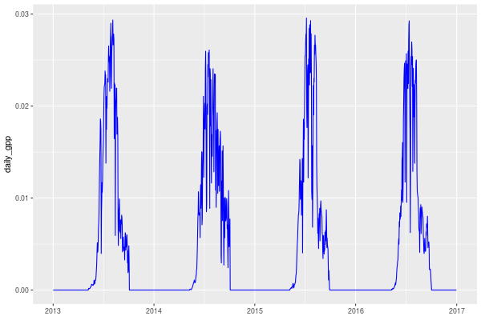
6.9 Egy apró javítás
plotMuso(variable="daily_gpp")+ labs(y=expression(paste("daily GPP [",kgC,m^-2,"]")))
6.10 musoMappingFind()
- Honnan tudjuk, hogy mi is egy általános változónak a neve?
- http://nimbus.elte.hu/bbgc/files/MUSO5b_variables.xlsx
- musoMappingFind() függvény segítségével pl.:
6.11 musoMappingFind()
musoMappingFind("yield")
| 3037 | cum_yieldC_HRV |
6.12 Nézzük meg, hogy hogyan változott a termés 2013 és 2017 között!
plotMuso(variable="cum_yieldC_HRV")+ labs(y="Termés [t/ha]")
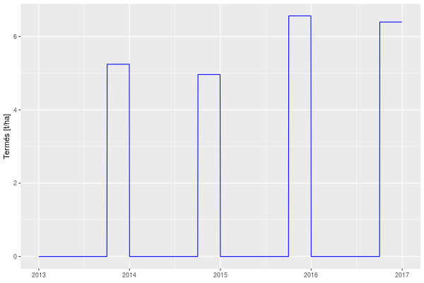
6.13 Ábrázoljuk inkább az éves maximumokat!
plotMuso(variable="cum_yieldC_HRV", timeFrame="year", groupFun=max)+ labs(y="Termés [t/ha]")

6.14 mentsük el az alapábránkat!
termesAlap <- plotMuso(variable="cum_yieldC_HRV", timeFrame="year", groupFun=max)+ labs(y="Termés [t/ha]")
6.15 Nézzük meg, majd mentsük le a LAI-t is!
LAIAlap <- plotMuso(variable="proj_lai")+ labs(y=expression( paste("Levélfelületi index ",m^2m^-2))) LAIAlap
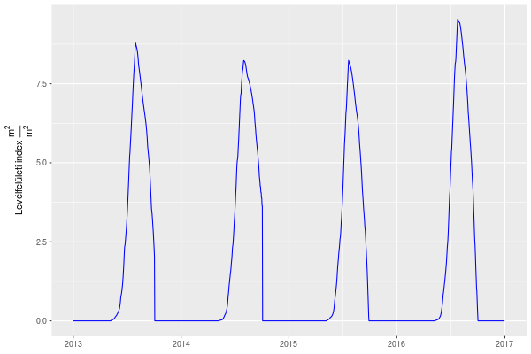
6.16 GPP alap
GPPAlap <- plotMuso(variable="daily_gpp")+ labs(y=expression(paste("daily GPP [",kgC,m^-2,"]"))) GPPAlap
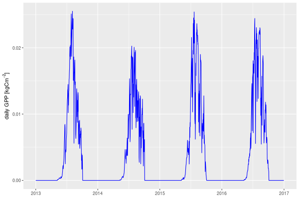
6.17 Gyep Biomassza
termesAlap_gyep <- plotMuso(variable = "leafc", timeFrame = "year", groupFun=sum, skipSpinup=FALSE)
6.18 Gyep LAI
LAIAlap_gyep <- plotMuso(variable = "proj_lai", skipSpinup=FALSE)
6.19 Gyep GPP
GPPAlap_gyep<-plotMuso(variable = "daily_gpp")
7 Kísérletek
7.1 Vetési idő
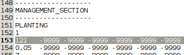
7.2 Vetési idő- Termés
TermesValtozas_vetesido <- termesAlap+ plotMuso(variable = "cum_yieldC_HRV", timeFrame = "year", groupFun=max, colour = "brown", layerPlot = TRUE, skipSpinup=FALSE) TermesValtozas_vetesido
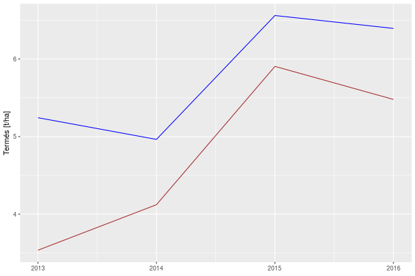
7.3 Vetési idő- LAI
LAIValtozas_vetesido <- LAIAlap+ plotMuso(variable = "proj_lai", colour = "brown", layerPlot = TRUE, skipSpinup=FALSE) LAIValtozas_vetesido
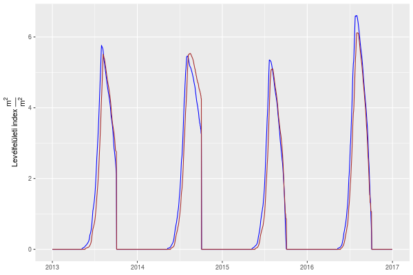
7.4 Vetési idő- GPP
GPPValtozas_vetesido <- GPPAlap + plotMuso(variable = "daily_gpp", colour = "brown", layerPlot = TRUE, skipSpinup=FALSE) GPPValtozas_vetesido
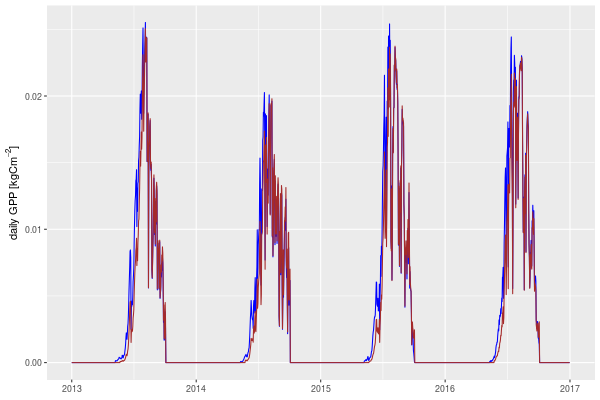
7.5 Műtrágyázás
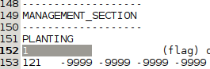
7.6 Műtrágyázás- Termés
TermesValtozas_fertilP <- termesAlap+ plotMuso(variable = "cum_yieldC_HRV", timeFrame = "year", groupFun=max, colour = "brown", layerPlot = TRUE, skipSpinup=FALSE) TermesValtozas_fertilP
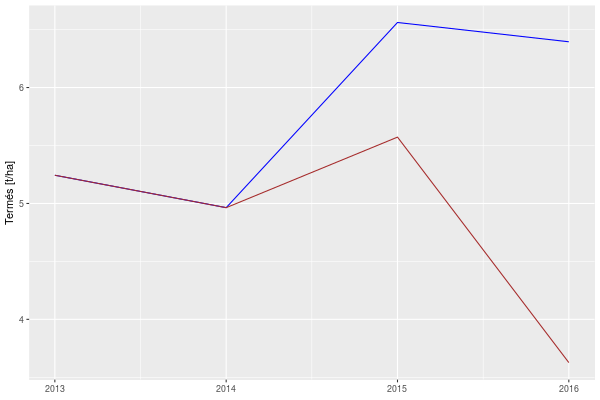
7.7 Műtrágyázás - LAI
LAIValtozas_fertilP <- LAIAlap+ plotMuso(variable = "proj_lai", colour = "brown", layerPlot = TRUE, skipSpinup=FALSE) LAIValtozas_fertilP
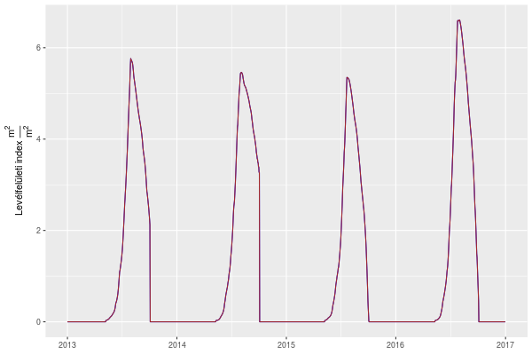
7.8 Műtrágyázás - GPP
GPPValtozas_fertilP <- GPPAlap + plotMuso(variable = "daily_gpp", colour = "brown", layerPlot = TRUE, skipSpinup=FALSE) GPPValtozas_fertilP
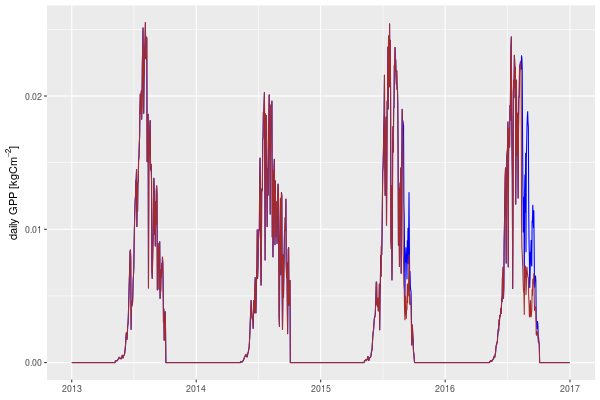
7.9 Szárazodás - Termés
TermesValtozas_szarazodas <- termesAlap_gyep+ plotMuso(variable = "leafc", timeFrame = "year", groupFun=sum, colour = "brown", layerPlot = TRUE, skipSpinup=FALSE) TermesValtozas_szarazodas
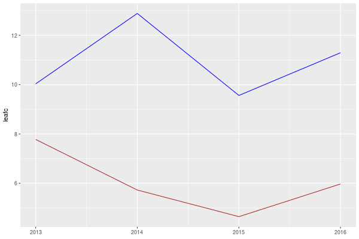
7.10 Szárazodás - LAI
LAIValtozas_szarazodas <- LAIAlap_gyep+ plotMuso(variable = "proj_lai", colour = "brown", layerPlot = TRUE, skipSpinup=FALSE) LAIValtozas_szarazodas
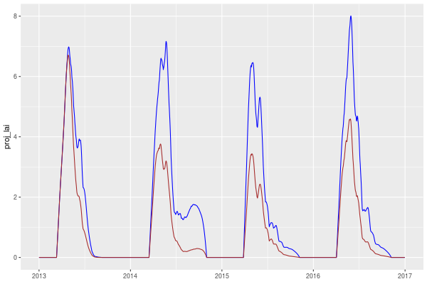
7.11 Szárazodás - GPP
GPPValtozas_szarazodas <- GPPAlap_gyep + plotMuso(variable = "daily_gpp", colour = "brown", layerPlot = TRUE, skipSpinup=FALSE) GPPValtozas_szarazodas

8 AgroMo-Lite
8.1 Telepítés
setwd("../hegyhatsal")
intall_github("hollorol/AgroMoLite") library(AgroMoLite)
soilWaterTest()